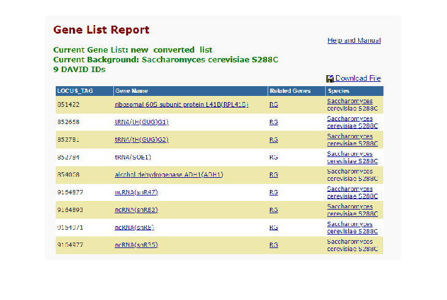

Contents
- RNA-Seq Analysis
- Find the series entry on GEO
- You need to find out the SRR identifiers for wild type and mutant samples.
- Download (in your code, if the file isn't downloaded before) the fastq
- DO NOT plce the fastqfile files in your dropbox folder.
- Download (in your code, if the file isn't downloaded before) the yeast genome fasta file and index it using bwa.
- Map the reads (the fastqfiles) against the yeast genome file using bmes_bwa(), which is provided to you.
- Download (and build/install as needed) the featureCounts progeram (from subread package). Download links and doc from
- Use featureCounts (from your code, using a system() call to "enrich" the mapped positions in the sam file
- Optional: (5% extra credit) Perform TPM normalization of gene counts data.
- Compare gene counts between mutant and wild type. List 10 most different (ranked by abs fold change) genes
- Use the genes that are differentially regulated between mutant and wild type.
- Perform functional enrichment analysis using DAVID. Report the enrichment results using comments or snapshot
RNA-Seq Analysis
Template by [Fernando Ramirez Thinh Nguyen] Code by [Fernando Ramirez Thinh Nguyen] Adapted from []
%%Background % In this assignmet, you will re-analyze the RNA-seq reported in the % following paper: % https://www.ncbi.nlm.nih.gov/pmc/articles/PMC4224148/
Find the series entry on GEO
You need to find out the SRR identifiers for wild type and mutant samples.
For this assignment, analyzing one run from each group is sufficient.
Download (in your code, if the file isn't downloaded before) the fastq
files from SRA (NCBI Sequence Read Archive). > the fastq files are not available via your browser. You will need the fastq-dump program (RNA Toolkit software) to download the fastq files from NCBI. see: https://edwards.sdsu.edu/research/fastq-dump/
% > Work in a smaller databset first. When code is complete, appy to % the origional SRA data. Expect download and analysis of original SRA % files to take several hours. % > If unable to compelte the assignment using original SRA files, may % use an alternative dataset (-5% fo grade penalty). You donwnload (in % your code, if the file isn't downloaded before) a random % down-sampling of the fastq files from the following sites: % > http://sacan.biomed.drexel.edu/ftp/rnaseq.dbp2/SRR1302790_pass.randsample.fastq % > http://sacan.biomed.drexel.edu/ftp/rnaseq.dbp2/SRR1302792_pass.randsample.fastq
DO NOT plce the fastqfile files in your dropbox folder.
> place files in the C:\bmes > map downloads to the C: drive WILD TYPE = SRR1302790 MUTANT TYPE = SRR1302792
Download (in your code, if the file isn't downloaded before) the yeast genome fasta file and index it using bwa.
> or, download the igenome compilation for yeast, which contains pre-indexed files. > DO NOT PLACE THE GENOME FASTA OR INDEX FILES IN DROPBOX FOLDER. Saccharomyces cerevisiae BY4741 genome file name Use this to locate your fasta files within C: Drive
[fngen,pthgen] = uigetfile({'*.gz';'*.fa';'*.*'},'Locate & Select the Genome Fasta File');
if contains(fngen,'.gz')
% gunzip extract
genomefastafile = fullfile(pthgen, fngen);
genomefastafile = gunzip(genomefastafile);
genomefastafile = genomefastafile{1};
else
genomefastafile = fullfile(pthgen, fngen);
end
% Import temp fastq file to complete the function before attacking the big file
% Then, import Big Run file
% Use this to locate your files within C: Drive
[fnrnWT,pthrnWT] = uigetfile({'*.fastq';'*.gz';'*.*'},'Locate & Select the Wild Type FastQ File');
if contains(fnrnWT,'.gz')
% gunzip extract
fastqfileWT = fullfile(pthrnWT,fnrnWT);
fastqfileWT = gunzip(fastqfileWT);
fastqfileWT = fastqfileWT{1};
else
fastqfileWT = fullfile(pthrnWT,fnrnWT);
end
[fnrnMT,pthrnMT] = uigetfile({'*.fastq';'*.gz';'*.*'},'Locate & Select the Mutant Type FastQ File');
if contains(fnrnMT,'.gz')
% gunzip extract
fastqfileMT = fullfile(pthrnMT,fnrnMT);
fastqfileMT = gunzip(fastqfileMT);
fastqfileMT = fastqfileMT{1};
else
fastqfileMT = fullfile(pthrnMT,fnrnMT);
end
Map the reads (the fastqfiles) against the yeast genome file using bmes_bwa(), which is provided to you.
[samfileWT,samsWT] = bmes_bwa(fastqfileWT,genomefastafile); [samfileMT,samsMT] = bmes_bwa(fastqfileMT,genomefastafile);
Download (and build/install as needed) the featureCounts progeram (from subread package). Download links and doc from
> http://subread.sourceforge.net/ > you may download it manually (outisde of code, from browser) > DO NOT PLACE THE GENOME FASTA OR INDEX FILES IN DROPBOX FOLDER.
Use featureCounts (from your code, using a system() call to "enrich" the mapped positions in the sam file
into resepective gene names. > DO NOT do featureCounts of a sam file if it has been done before > DO NOT PLACE THE GENOME FASTA OR INDEX FILES IN DROPBOX FOLDER. Downloaded and ready to execute
[fnfe, pthfe] = uigetfile('*.exe','Locate & Select featureCount Program'); featureCounts = fullfile(pthfe,fnfe); [fnAN, pthAN] = uigetfile({'*.gtf';'*.gz'},'Locate & Select .gtf or annotation file'); if contains(fnAN,'.gz') GTFfile = fullfile(pthAN,fnAN); GTFfile = gunzip(GTFfile); GTFfile = GTFfile{1}; else GTFfile = fullfile(pthAN,fnAN); end txtfileWT = [pthAN 'sasaccharomyces_readsWT.txt']; system([featureCounts ' "-a" "' GTFfile '" "-o" "' txtfileWT '" "' samfileWT '"']) txtfileMT = [pthAN 'sasaccharomyces_readsMT.txt']; system([featureCounts ' "-a" "' GTFfile '" "-o" "' txtfileMT '" "' samfileMT '"'])
========== _____ _ _ ____ _____ ______ _____
===== / ____| | | | _ \| __ \| ____| /\ | __ \
===== | (___ | | | | |_) | |__) | |__ / \ | | | |
==== \___ \| | | | _ <| _ /| __| / /\ \ | | | |
==== ____) | |__| | |_) | | \ \| |____ / ____ \| |__| |
========== |_____/ \____/|____/|_| \_\______/_/ \_\_____/
v2.0.2
//========================== featureCounts setting ===========================\\
|| ||
|| Input files : 1 SAM file ||
|| ||
|| SRR1302790_pass.randsample.fastq.sam ||
|| ||
|| Output file : sasaccharomyces_readsWT.txt ||
|| Summary : sasaccharomyces_readsWT.txt.summary ||
|| Paired-end : no ||
|| Count read pairs : no ||
|| Annotation : Saccharomyces_cerevisiae.R64-1-1.104.gtf (GTF) ||
|| Dir for temp files : ./ ||
|| ||
|| Threads : 1 ||
|| Level : meta-feature level ||
|| Multimapping reads : not counted ||
|| Multi-overlapping reads : not counted ||
|| Min overlapping bases : 1 ||
|| ||
\\============================================================================//
//================================= Running ==================================\\
|| ||
|| Load annotation file Saccharomyces_cerevisiae.R64-1-1.104.gtf ... ||
|| Features : 7507 ||
|| Meta-features : 7127 ||
|| Chromosomes/contigs : 17 ||
|| ||
|| Process SAM file SRR1302790_pass.randsample.fastq.sam... ||
|| Single-end reads are included. ||
|| Total alignments : 48422 ||
|| Successfully assigned alignments : 5411 (11.2%) ||
|| Running time : 0.00 minutes ||
|| ||
|| Write the final count table. ||
|| Write the read assignment summary. ||
|| ||
|| Summary of counting results can be found in file "C: Users\tnthi\AppData\ ||
|| Local\Temp\fastq\sasaccharomyces_readsWT.txt.summary" ||
|| ||
\\============================================================================//
ans =
0
========== _____ _ _ ____ _____ ______ _____
===== / ____| | | | _ \| __ \| ____| /\ | __ \
===== | (___ | | | | |_) | |__) | |__ / \ | | | |
==== \___ \| | | | _ <| _ /| __| / /\ \ | | | |
==== ____) | |__| | |_) | | \ \| |____ / ____ \| |__| |
========== |_____/ \____/|____/|_| \_\______/_/ \_\_____/
v2.0.2
//========================== featureCounts setting ===========================\\
|| ||
|| Input files : 1 SAM file ||
|| ||
|| SRR1302792_pass.randsample.fastq.sam ||
|| ||
|| Output file : sasaccharomyces_readsMT.txt ||
|| Summary : sasaccharomyces_readsMT.txt.summary ||
|| Paired-end : no ||
|| Count read pairs : no ||
|| Annotation : Saccharomyces_cerevisiae.R64-1-1.104.gtf (GTF) ||
|| Dir for temp files : ./ ||
|| ||
|| Threads : 1 ||
|| Level : meta-feature level ||
|| Multimapping reads : not counted ||
|| Multi-overlapping reads : not counted ||
|| Min overlapping bases : 1 ||
|| ||
\\============================================================================//
//================================= Running ==================================\\
|| ||
|| Load annotation file Saccharomyces_cerevisiae.R64-1-1.104.gtf ... ||
|| Features : 7507 ||
|| Meta-features : 7127 ||
|| Chromosomes/contigs : 17 ||
|| ||
|| Process SAM file SRR1302792_pass.randsample.fastq.sam... ||
|| Single-end reads are included. ||
|| Total alignments : 244457 ||
|| Successfully assigned alignments : 78751 (32.2%) ||
|| Running time : 0.01 minutes ||
|| ||
|| Write the final count table. ||
|| Write the read assignment summary. ||
|| ||
|| Summary of counting results can be found in file "C: Users\tnthi\AppData\ ||
|| Local\Temp\fastq\sasaccharomyces_readsMT.txt.summary" ||
|| ||
\\============================================================================//
ans =
0
Optional: (5% extra credit) Perform TPM normalization of gene counts data.
reads/length for each gene and then sum normalize it then use the gene counts or TPM for the questions below
TWT = readtable(txtfileWT); reads = TWT{:,end}; LENG = TWT{:,'Length'};
genecountsWT_TPM = reads./LENG; genecountsWT_TPM = (genecountsWT_TPM/sum(genecountsWT_TPM))*1e6;
TWT = addvars(TWT,genecountsWT_TPM,'NewVariableNames','Gene Counts WT - TPM Normalized');
TMT = readtable(txtfileMT); reads = TMT{:,end}; LENG = TMT{:,'Length'};
genecountsMT_TPM = reads./LENG; genecountsMT_TPM = (genecountsMT_TPM/sum(genecountsMT_TPM))*1e6;
TMT = addvars(TMT,genecountsMT_TPM,'NewVariableNames','Gene Counts MT - TPM Normalized');
Warning: Column headers from the file were modified to make them valid MATLAB identifiers before creating variable names for the table. The original column headers are saved in the VariableDescriptions property. Set 'PreserveVariableNames' to true to use the original column headers as table variable names. Warning: Column headers from the file were modified to make them valid MATLAB identifiers before creating variable names for the table. The original column headers are saved in the VariableDescriptions property. Set 'PreserveVariableNames' to true to use the original column headers as table variable names.
Compare gene counts between mutant and wild type. List 10 most different (ranked by abs fold change) genes
%between the two groups. % deltaCT_WT = zeros(size(TWT,1),1); % preallocation % deltaCT_MT = zeros(size(TMT,1),1); % preallocation % for row = 1:size(TWT,1) % deltaCT_WT(row) = mean(TWT(row,'Gene Counts WT - TPM Normalized')); % deltaCT_MT(row) = mean(TMT(row,'Gene Counts MT - TPM Normalized')); % end deltadeltaCT = TMT{:,'Gene Counts MT - TPM Normalized'} - TWT{:,'Gene Counts WT - TPM Normalized'}; FC = 2.^(-deltadeltaCT); for row = 1:size(FC,1) if FC(row) < 1 FC(row) = (-1/FC(row)); end end [FCsort, FCindex] = sort(abs(FC),'descend'); T = TWT(FCindex,1); T.Properties.VariableNames = {'WildTypeGeneID'}; T = [T TMT(FCindex,1)]; T.Properties.VariableNames(2) = {'MutantTypeGeneID'}; T = [T array2table(FCsort)]; T.Properties.VariableNames(3) = {'FCVal'}; T.Properties.Description = 'Top 10 Most Different Genes According to FC values'; fprintf('Top 10 Most Different Genes\n') disp(T(1:10,:))
Top 10 Most Different Genes
WildTypeGeneID MutantTypeGeneID FCVal
______________ ________________ _____
{'YDL133C-A'} {'YDL133C-A'} Inf
{'snR47' } {'snR47' } Inf
{'snR8' } {'snR8' } Inf
{'snR35' } {'snR35' } Inf
{'YOL086C' } {'YOL086C' } Inf
{'tE(UUC)G1'} {'tE(UUC)G1'} Inf
{'tH(GUG)G1'} {'tH(GUG)G1'} Inf
{'tH(GUG)G2'} {'tH(GUG)G2'} Inf
{'snR82' } {'snR82' } Inf
{'YLR167W' } {'YLR167W' } Inf
Use the genes that are differentially regulated between mutant and wild type.
You have to defind/decide what is means to be differentially regulated.
Perform functional enrichment analysis using DAVID. Report the enrichment results using comments or snapshot
image(s) of DAVID enriched annotations list.
img = imread('DavidScreenshot.png');
imshow(img)
